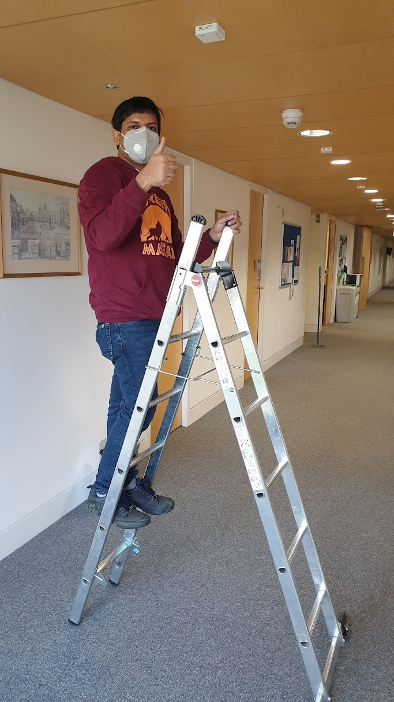
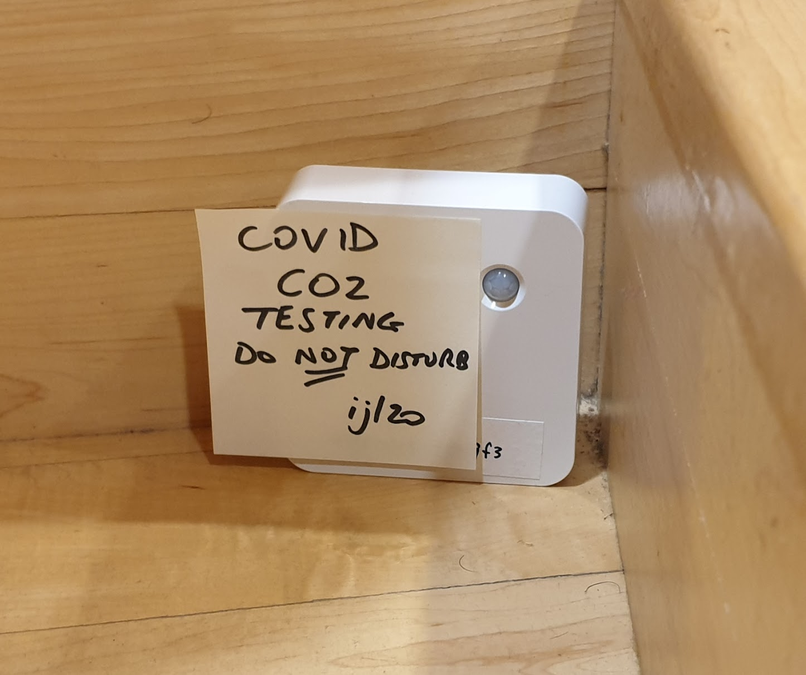
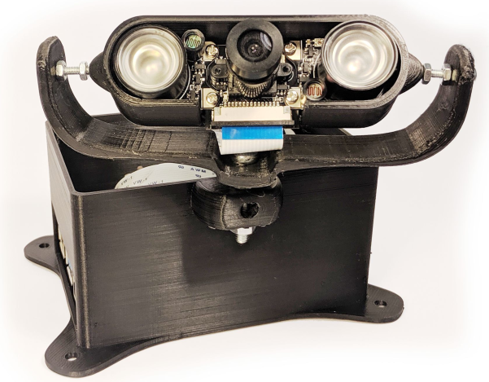
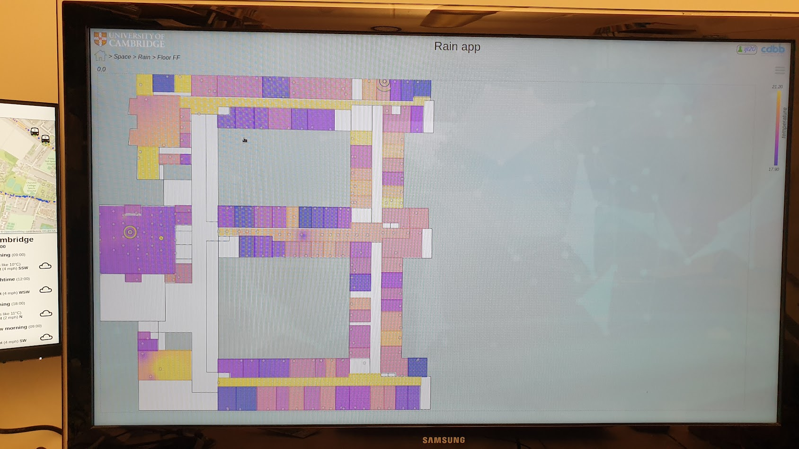
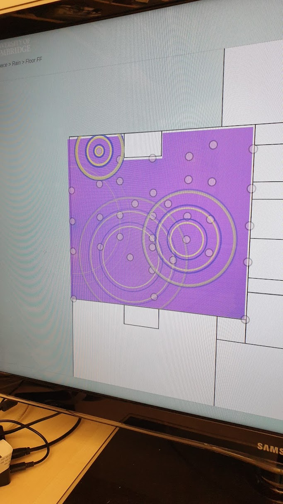
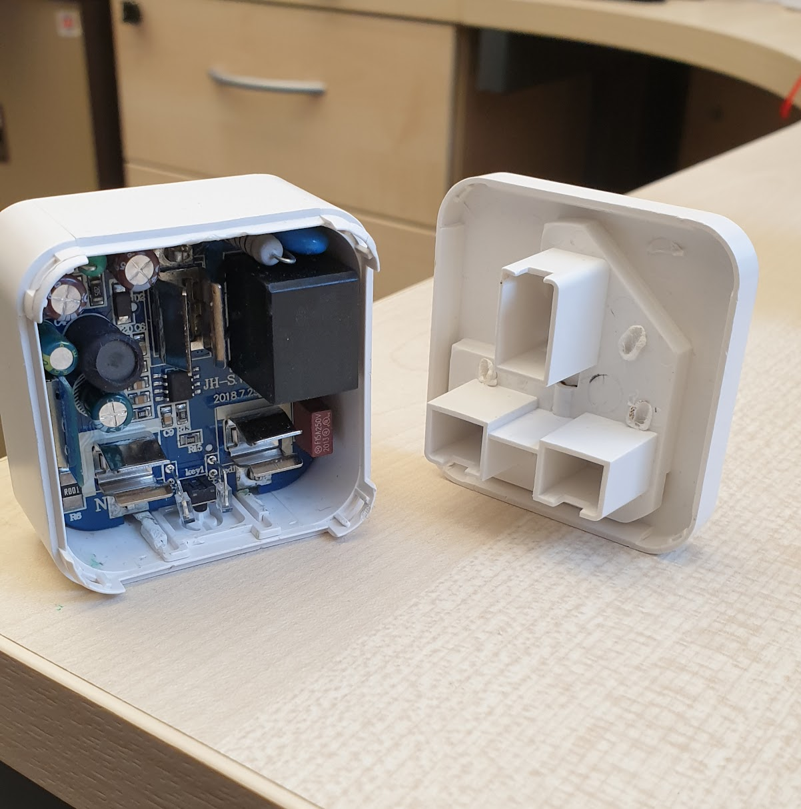

Artifacts
Dense deployment of sensors on WGB ground floor corridor ceiling

Live CO2 monitoring became important during Covid

Deepdish intelligent sensor

Real time monitoring of entire William Gates Building

Rain, showing CO2 plus people movement in large lecture theatre

Smartplug, useful for detailed energy monitoring, privacy issues to be addressed
